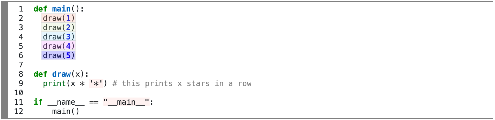
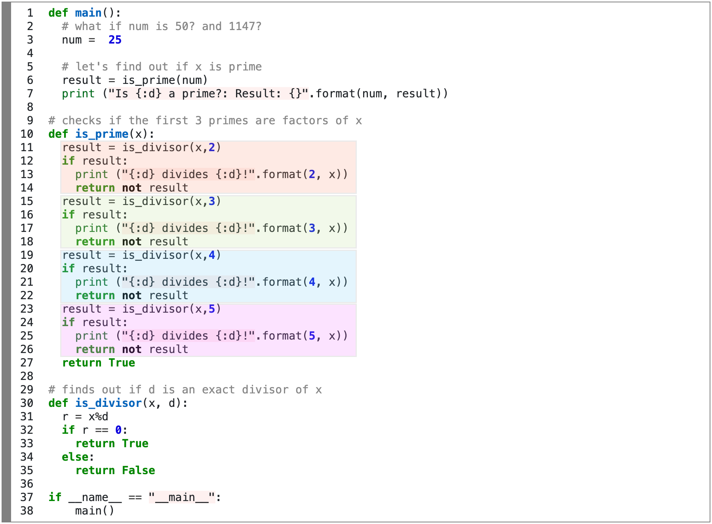
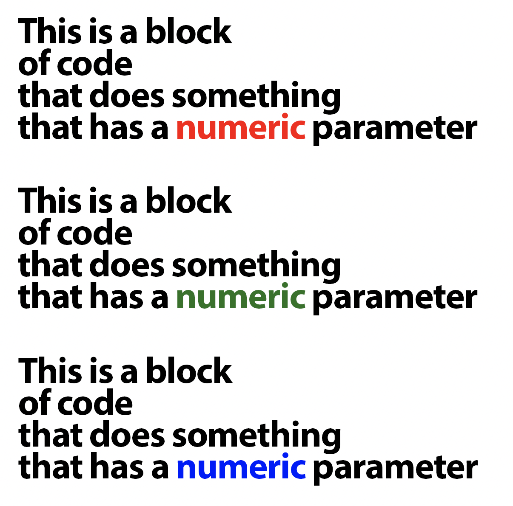
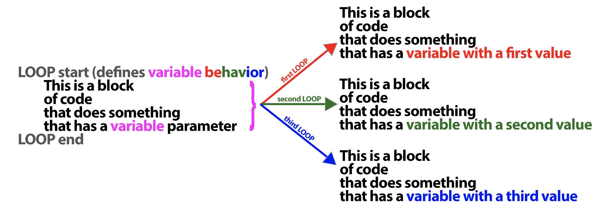

CSC 111
Introduction to Computer Science Through Programming
Smith Computer Science
Introduction to Computer Science Through Programming
Smith Computer Science
Sometimes, we need to do work over and over again.
We've talked about ways to do this work in clever ways, for example: by using function calls
Example 1: Drawing a pyramid of stars
1 2 3 4 5 6 7 8 9 10 11 12 | def main(): draw(1) draw(2) draw(3) draw(4) draw(5) def draw(x): print(x * '*') # this prints x stars in a row if __name__ == "__main__": main() |
1 2 3 4 5 6 7 8 9 10 11 12 13 14 15 16 17 18 19 20 21 22 23 24 25 26 27 28 29 30 31 32 33 34 35 36 37 38 | def main(): # what if num is 50? and 1147? num = 25 # let's find out if x is prime result = is_prime(num) print ("Is {:d} a prime?: Result: {}".format(num, result)) # checks if the first 3 primes are factors of x def is_prime(x): result = is_divisor(x,2) if result: print ("{:d} divides {:d}!".format(2, x)) return not result result = is_divisor(x,3) if result: print ("{:d} divides {:d}!".format(3, x)) return not result result = is_divisor(x,4) if result: print ("{:d} divides {:d}!".format(4, x)) return not result result = is_divisor(x,5) if result: print ("{:d} divides {:d}!".format(5, x)) return not result return True # finds out if d is an exact divisor of x def is_divisor(x, d): r = x%d if r == 0: return True else: return False if __name__ == "__main__": main() |
The first thing to notice is that there are blocks of code that look very similar to one another.

OR

There are only small differences in the values used (directly or the ones inside variables).
we can take advantage of this if only there was some structure that would "perform the same block of code over and over again, until we're done with it".
Well, guess what?
Before introducing the syntax, I'll show a diagram of what these structures (there are more than 1) do:

We can use a structure that "repeats the code" while also "updating some variable" in order to make each loop do the same work that the repeated code (previous image) was doing.

while expression: # Loop expression # Loop body: Sub-statements to execute # if the loop expression evaluates to True # Statements to execute after the expression evaluates to Fals
1 2 3 4 5 6 7 8 9 10 11 | def main(): draw(5) def draw(lim): i = 1 while i <= lim : print(i * '*') # this prints x stars in a row i+=1 if __name__ == "__main__": main() |
1 2 3 4 5 6 7 8 9 10 11 12 13 14 15 16 17 18 19 20 21 22 23 24 25 26 27 28 29 30 31 32 | # Calc if a number is a prime def main(): # what if num is 50? and 1147? num = 25 # let's find out if x is prime result = is_prime(num) print ("Is {:d} a prime?: Result: {}".format(num, result)) # checks if there is a divisor in [2,x/2] # not the most efficient, but ok def is_prime(x): divisor = 2 lim = x//2 while divisor <= lim: result = is_divisor(x,divisor) if result: print ("{:d} divides {:d}!".format(divisor, x)) return not result divisor+=1 return True # finds out if d is an exact divisor of x def is_divisor(x, d): r = x%d if r == 0: return True else: return False if __name__ == "__main__": main() |
Activity 2 [2 minutes]:
Before we see the syntax for the for loop, we'll see one useful function: range.
# r is the object range(0,10), 10 not included r = range(10) print(r) num_list = list(r) print(num_list) print (3 in r) print(-1 in r) print (10 in r) # r2 is the object range(3,7), 7 not included r2 = range(3, 7) num_list2 = list(r2) print(num_list2) # r3 is the object range(2,10), skipping to every 3rd; 10 not included r3 = range(2, 10,3) num_list3 = list(r3) print(num_list3)
for variable in container: # Loop body: Sub-statements to execute # for each item in the container # Statements to execute after the for loop is complete
1 2 3 4 5 6 7 8 9 | def main(): draw(5) def draw(lim): for i in range(1,5) : print(i * '*') # this prints x stars in a row if __name__ == "__main__": main() |
1 2 3 4 5 6 7 8 9 10 11 12 13 14 15 16 17 18 19 20 21 22 23 24 25 26 27 28 29 30 31 | # Calc if a number is a prime def main(): # what if num is 50? and 1147? num = 25 # let's find out if x is prime result = is_prime(num) print ("Is {:d} a prime?: Result: {}".format(num, result)) # checks if there is a divisor in [2,x/2] # not the most efficient, but ok def is_prime(x): divisor = 2 lim = x//2 for divisor in range(2,lim): result = is_divisor(x,divisor) if result: print ("{:d} divides {:d}!".format(divisor, x)) return not result return True # finds out if d is an exact divisor of x def is_divisor(x, d): r = x%d if r == 0: return True else: return False if __name__ == "__main__": main() |